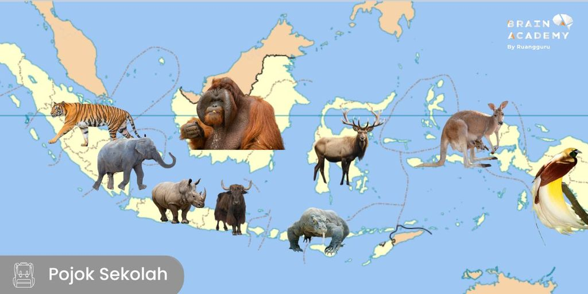

1. Ragam Fauna Berdasarkan Persebaran Geografis
Fauna tersebar di berbagai wilayah dunia, dan setiap wilayah memiliki karakteristik unik yang memengaruhi jenis hewan yang hidup di sana.
- Fauna Paleartik Meliputi wilayah Eropa, Asia Utara, dan Afrika Utara. Hewan yang ditemukan di sini antara lain beruang kutub, rusa kutub, dan serigala.
- Fauna Neotropik Berada di kawasan Amerika Tengah, Amerika Selatan, dan Karibia. Contoh hewannya adalah jaguar, anaconda, dan burung toucan.
- Fauna AfroTropik Meliputi sebagian besar Afrika di bawah Gurun Sahara. Hewannya mencakup gajah Afrika, singa, dan kuda nil.
- Fauna Oriental Tersebar di wilayah Asia Selatan dan Asia Tenggara, termasuk Indonesia. Contohnya adalah harimau, orangutan, dan komodo.
- Fauna Australisia Berada di Australia, Papua, dan beberapa pulau Pasifik. Fauna khasnya adalah kanguru, koala, dan burung kasuari.